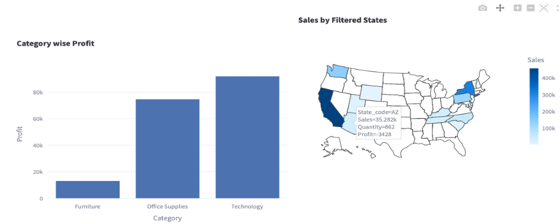
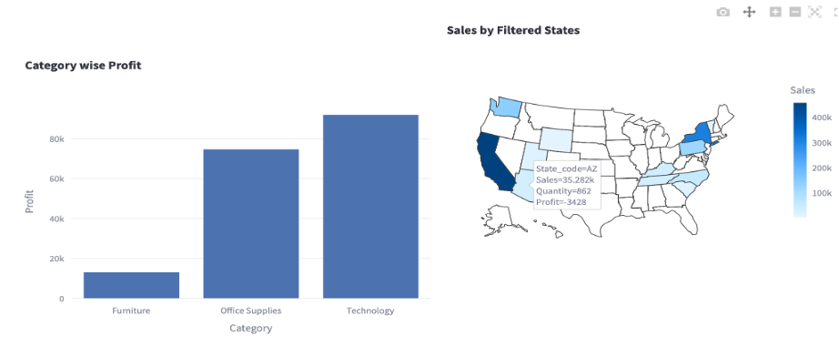

Hi there! I’m Sudip Khadka, a passionate Data Scientist with over three years of experience transforming data into actionable insights and crafting compelling narratives through advanced analytics and machine learning. My journey in data science is driven by a relentless curiosity to unravel complex problems and a commitment to leveraging data for impactful decision-making. I hold a Master of Mathematics in Finance from the University of Maryland, College Park, where I deepened my expertise in quantitative finance and its synergy with data science.
 

Build dashboard using python to visualize key performance indicators for store sales. The dashboard provides users with the flexibility to choose their own filters, similar to Tableau and Power BI.

Developed an Explainable AI (XAI) model, namely a Confounder-Adjusted-Diverse-Counterfactual-Explanation-Model, for tabular datasets. This model highlights the smallest changes needed to move data points across decision boundaries. Additionally, a feed-forward neural network was applied to predict whether a targeted audience would open a bank account. By integrating counterfactual explanations, the model identifies which features to adjust to alter the prediction outcome.
Implemented an iterative method to reduce the dimensional using the eigen decomposition and extracted the important features through truncation and reduced the dimension as smaller as possible while maximizing the out of sample prediction via integrating logistic regression.
Used LangChain with a large language model (LLM) to build a custom chatbot designed to handle highly confidential information. This chatbot efficiently addresses stakeholders' queries, ensuring secure and accurate responses.

Instead of assuming that the Sum of Squared Errors (SSE) is due to omitted variables, I assume the SSE in stock prediction is due to 'noisey signal'. I used Fourier transformation to filter out the noise and extract the true signal, then applied support vector regression to make predictions.